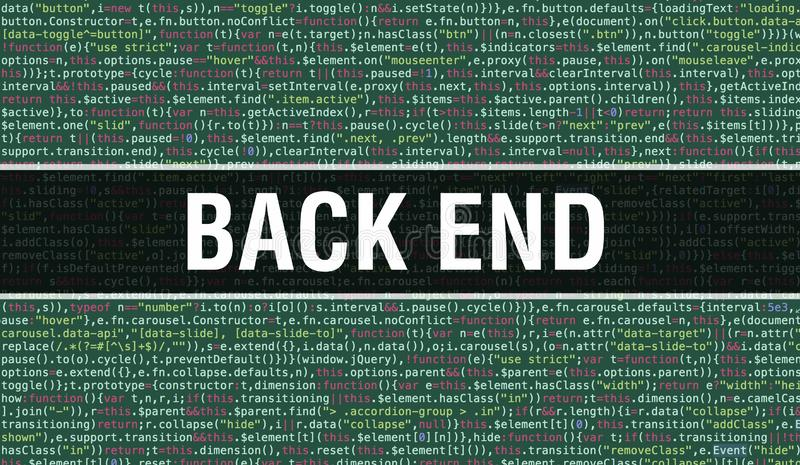
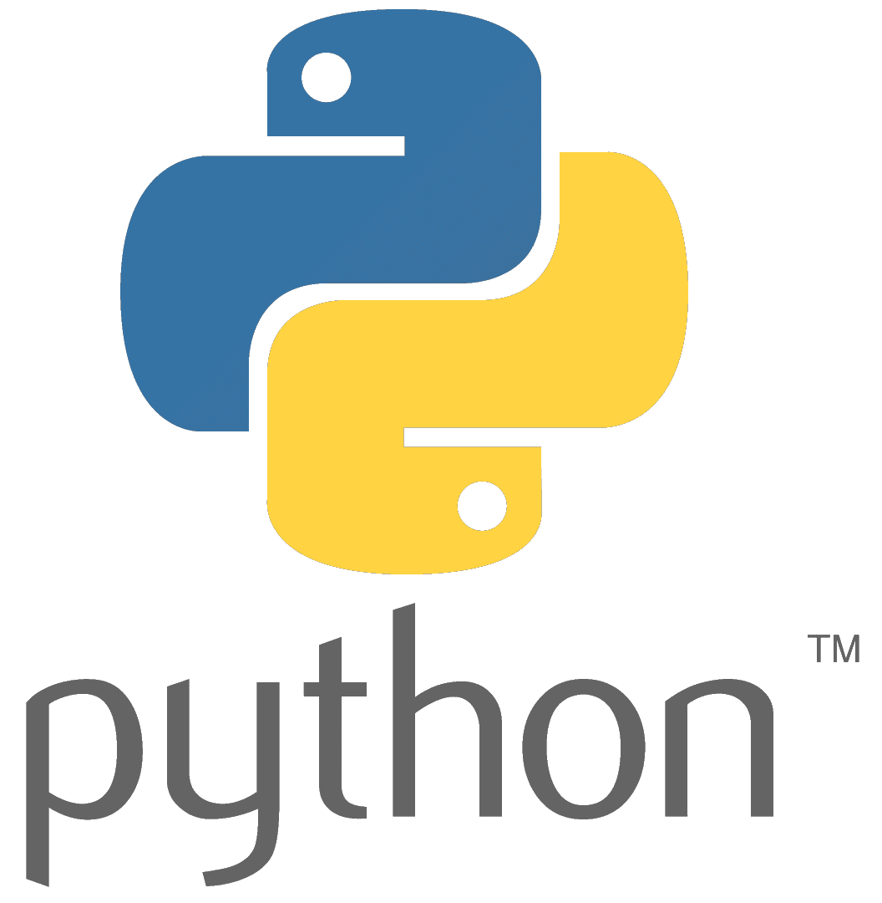
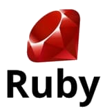
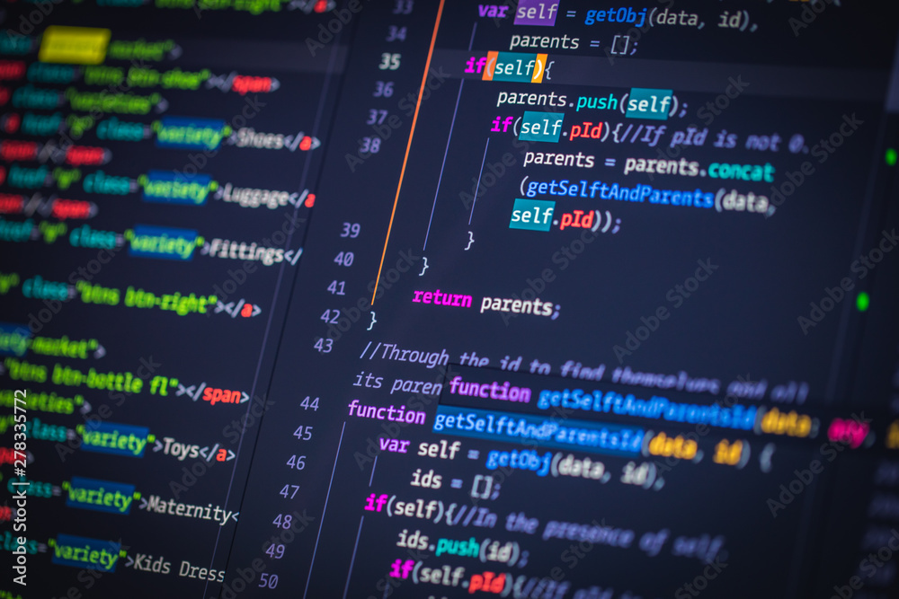

Lenguajes
Lenguajes
|
Lenguajes de Programación El Back-end trabaja todo el tiempo con lenguajes de programación, se requieren de una lógica ya que esta área es también la encargada de optimizar recursos, de la seguridad de un sitio y demás. |
 |
|
Aunque la programación backend es responsable, principalmente, del intercambio de datos entre los servidores web y los usuarios. Aunque hay muchos lenguajes de programación de backend disponibles en este momento, no todos son buenos. Por lo tanto, hemos seleccionado los 5 mejores lenguajes que puede utilizar para el proceso de desarrollo de su aplicación. Entonces, los siguientes son los 5 mejores lenguajes de desarrollo de backend que puede usar. |
|

|
JavaScript JavaScript es uno de los lenguajes más populares de la última década. Permite a los desarrolladores crear frontend y backend con la misma sintaxis, lo cual reduce significativamente la carga de trabajo. |
|  |
Python Proporciona un entorno de desarrollo backend muy limpio y sencillo. Según una encuesta de Stack Overflow realizada en 2020, este fue el tercer lenguaje de programación más querido por los desarrolladores. |
|  |
Ruby Lo mejor de este lenguaje es que tiene una sintaxis similar a Python y Java o solo esto, sino que permite grandes capacidades de automatización. |

|
PHP Se ha convertido en el mejor lenguaje de desarrollo de lado del servidor del mundo. Según una encuesta de W3Tech alrededor de 79% crean sitios web con PHP. |

|
Java Se ha convertido en uno de los mejores del mundo lenguajes de programación del mundo. Java es muy simple y fácil de entender permite que los diseñadores puedan escribir un programa y, luego, ejecutarlo desde cualquier dispositivo. |
|
Aplicaciones |

Demandas |